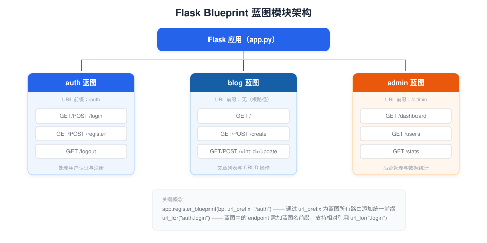

Blueprint
When the application has only one file, writing all routes together is not a problem.
But as features grow—user module, article module, admin backend—the code becomes difficult to maintain.
BlueprintIt is the modular solution Flask provides, allowing you to split the application into independent functional units.
Why blueprints are needed
The core problem that blueprints solve:
- Code OrganizationGroup related routes, templates, and static files together
- ReusabilityThe same blueprint can be registered to different applications, or registered multiple times (with different prefixes)
- Team Collaboration: Different developers are responsible for different blueprint modules, reducing conflicts.

Creating a Blueprint
Using a BlueprintBlueprintClass creation, usage andFlaskVery similar—the same route decorators, the same view function syntax:
Example
from flask import Blueprint, render_template, request, session, redirect, url_for
# Create blueprint instance
# The first parameter "auth" is the blueprint's name (used for url_for references)
# __name__ tells the blueprint where to find templates and static files
bp = Blueprint("auth", __name__)
# Use bp.route in the blueprint, not app.route
@bp.route("/login", methods=["GET", "POST"])
def login():
if request.method == "POST":
username = request.form.get("username", "")
if username:
session["username"] = username
return redirect(url_for("blog.index"))
return render_template("auth/login.html")
@bp.route("/register", methods=["GET", "POST"])
def register():
if request.method == "POST":
username = request.form.get("username", "")
if username:
return redirect(url_for("auth.login"))
return render_template("auth/register.html")
@bp.route("/logout")
def logout():
session.clear()
return redirect(url_for("blog.index"))
Example
from flask import Blueprint, render_template
bp = Blueprint("blog", __name__)
@bp.route("/")
def index():
# Mock article data
posts = [
{"title": Flask Introduction, "author": "runoob"},
{"title": Blueprint Explained, "author": "RUNOOB"},
]
return render_template("blog/index.html", posts=posts)
@bp.route("/create", methods=["GET", "POST"])
def create():
return render_template("blog/create.html")
Registering the Blueprint
A blueprint does not take effect automatically after creation; it needs to be registered in the application:
Example
from flask import Flask
from auth import bp as auth_bp
from blog import bp as blog_bp
app = Flask(__name__)
app.secret_key = "dev-secret-key"
# Register the blueprint with the app
# url_prefix: adds a common prefix to all routes in the blueprint
app.register_blueprint(auth_bp, url_prefix="/auth")
# The auth blueprint routes become: /auth/login, /auth/logout, /auth/register
app.register_blueprint(blog_bp)
# The blog blueprint has no prefix, routes remain: /, /create
Complete route table after registration:
| URL | Blueprint | endpoint (used by url_for) |
|---|---|---|
| / | blog | blog.index |
| /create | blog | blog.create |
| /auth/login | auth | auth.login |
| /auth/register | auth | auth.register |
| /auth/logout | auth | auth.logout |
After registering the blueprint,url_for()In it, the endpoint needs to have the blueprint name added as a prefix, for exampleurl_for("auth.login")rather thanurl_for("login")。
Special usage of url_for in blueprints
Within the same blueprint, you can use relative references that start with a dot:
Example
@bp.route("/")
def index():
# Relative references within the same blueprint (starting with a dot)
login_url = url_for(".login") # Equivalent to url_for("auth.login")
register_url = url_for(".register") # Equivalent to url_for("auth.register")
# Referencing across blueprints requires the full endpoint
blog_url = url_for("blog.index") # Reference the blog blueprint's index
Blueprint templates and static files
Blueprints can also have their own templates and static files.
When a blueprint has its own template folder, Flask will first look in the application'stemplatessearch in it, and if not found, then search in the folder specified by the blueprint.
Example
bp = Blueprint("auth", __name__, template_folder="templates")
# Blueprint-specific template organization
# Path: auth/templates/auth/login.html
# When rendering: render_template("auth/login.html")
# This organization avoids file name conflicts (login.html may differ between auth and blog)
Recommended blueprint directory structure:
myflaskapp/
├── app.py # 应用入口，注册蓝图
├── auth.py # 认证蓝图
├── blog.py # 博客蓝图
├── templates/ # 应用级模板（公共 base.html 等）
│ └── base.html
├── static/ # 应用级静态文件
│ └── style.css
├── auth/ # auth 蓝图的独立资源（可选）
│ └── templates/
│ └── auth/
│ ├── login.html
│ └── register.html
└── blog/ # blog 蓝图的独立资源（可选）
└── templates/
└── blog/
├── index.html
└── create.html
The simplest approach is to not configure a separate template folder for the blueprint, and put templates uniformly in the project root directory'stemplates/Below, distinguish by subdirectories:templates/auth/login.html、templates/blog/index.html。
Factory pattern — create_app
As blueprints increase, directly creating them at the top level of the moduleapp = Flask(__name__)Will encounter circular import issues.
The Factory Pattern is the best practice for solving this problem:
Example
from flask import Flask
def create_app():
"""Application factory function — returns a configured Flask instance"""
app = Flask(__name__)
app.secret_key = "dev-secret-key"
# Load configuration
app.config.from_pyfile("config.py", silent=True)
# Import blueprints inside the function to avoid circular imports
from auth import bp as auth_bp
from blog import bp as blog_bp
# Register blueprint
app.register_blueprint(auth_bp, url_prefix="/auth")
app.register_blueprint(blog_bp)
return app
Advantages of the factory pattern:
- Eliminate circular importsBlueprints can be importedapp，appYou can also import blueprints, because the import happens inside the function.
- Support testingCan create app instances with different configurations for testing
- Multi-instance deploymentThe same code can create multiple independent app instances
After using the factory pattern, you need toflask --app "app:create_app()" runStart:
$ flask --app "app:create_app()" run
Other features in blueprints
Blueprints also support decorators such as before_request, errorhandler, etc., and their usage is the same as the app:
Example
def check_login():
"""Check login status before all requests in the auth blueprint"""
if request.endpoint not in ("auth.login", "auth.register"):
if "username" not in session:
return redirect(url_for("auth.login"))
@bp.errorhandler(404)
def not_found(error):
"""404 error page dedicated to the auth blueprint"""
return render_template("auth/404.html"), 404
other extensionsBlueprint'sbefore_requestIt only affects the routes within that blueprint. If you need to execute logic before all requests, you should useapp.before_request。